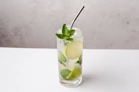

Mojito

Description
A refreshing summer drink originating from the carribean. This drink is made from rum,
however, what makes the drink a classic is the refreshing mint and lime addition to the palate.
Nothing beats a sweet citrus and mint rum cocktail to cool off with on a hot day. Except one with ice...
Ingredients
- Rum
- Ice
- Club Soda
- Limes
- Simple Syrup
- Fresh sprigs of Mint
Steps
- Lightly muddle your desired amount of mint in the bottom of a collins glass. Do so gently, as to not tear the leaves as you express the oils.
- fill the glass with small ice cubes, and add three quarters of an ounce of simple syrup
- Add an ounce of lime juice to the glass
- add two ounces of Rum
- Top the glass with club soda and lightly incorporate the ingredients together with a bar spoon
- Garnish with a fresh sprig of mint
Home